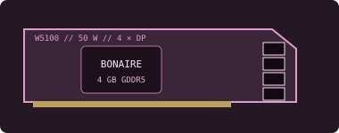

[ LEGACY WORKSTATION GRAPHICS ]
AMD FirePro W5100 4 GB
A 2014 professional midrange workstation adapter based on Bonaire, notable for four full-size DisplayPort outputs at modest power.

Recorded specifications
| GPU | Bonaire-class GCN; 768 stream processors. |
|---|---|
| Memory | 4 GB GDDR5, 128-bit memory interface. |
| Interface & power | PCI Express 3.0 x16; 50 W board-power class; no auxiliary PCIe power connector. |
| Outputs | Four full-size DisplayPort 1.2 connectors; display count, refresh rate and adapter support depend on driver and monitor. |
| Physical fit | Single-slot, full-height/half-length class. Check exact card length, bracket and chassis airflow; ensure adjacent slots and connectors remain accessible. |
Workstation & driver compatibility
Fits workstations needing several professional displays without a high-power GPU. Requires a compatible PCIe x16 slot and full-height bracket; OEM configurations may differ.
- Use AMD's FirePro/Radeon Pro Enterprise archive only after confirming W5100 and OS appear in that release's supported-product list.
- Professional application certification is specific to the app release and graphics-driver branch. Check the OEM workstation's validation records and CAD vendor's matrix.
- Confirm DisplayPort cables/adapters and monitor timing, and inspect the single-slot cooler, port panel and driver device ID.
Sources & further reading
- AMD — previous drivers and product supportManufacturer legacy archive; confirm W5100/OS compatibility for a particular driver.
- AMD — Radeon Pro Software for Enterprise 21.Q2 release notesOfficial professional-driver release notes and supported-product guidance.
- TechPowerUp GPU Database — FirePro W5100Independent specification cross-check; consult AMD and the exact OEM manual for final fit.
Specifications refer to the reference model; board-specific clocks and physical dimensions should be checked on the specimen.